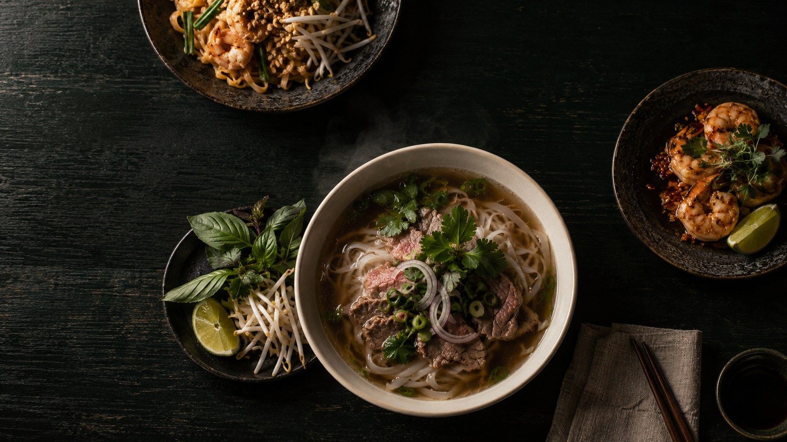

ПАНАЗИАТСКАЯ КУХНЯИЛЬИНСКОЕ-УСОВО
Тонкий По
Вкус Азии.
В тонких деталях.
В тонких деталях.
Тёплый бульон. Пряные травы.
Время, которое хочется
посвятить хорошей еде.
В ГОСТИ ИЛИ К ВАМ ДОМОЙЛистайте медленно
Среда–воскресенье · 11:00–22:00
Путешествие начинается
с первой ложки.
Мы собрали вкусы Азии в небольшом бистро.
Томлёный фо бо, огненный вок, нежные креветки.
И простое удовольствие — быть здесь и сейчас.
03 / К ВАШЕМУ СТОЛУБлиже,
Ближе,
чем кажется.
Оставайтесь дома. Ваши любимые блюда
отправятся в маленькое путешествие к вам.
ПУТЬ ВАШЕГО ЗАКАЗАДЕМО
- 01
Заказ принят
Всё начинается с вашего выбора.
- 02
Готовим для вас
Немного огня, терпения и внимания.
- 03
Уже в пути
Скоро будет повод накрыть на стол.
- 04
Приятного аппетита
Самое время отложить всё остальное.
В рабочем сервисе этапы поступают из системы кафе. В этом концепте их можно переключать вручную.

БОЛЬШЕ, ЧЕМ ОБЕДТонкий вкус.
Тонкий вкус.
Тёплый приём.
Приходите, когда хочется замедлиться.
Заказывайте, когда хочется остаться дома.
Мы всегда рады быть частью вашего дня.
ДО ВСТРЕЧИ В БИСТРО
В гости к По.
Хорошей еде
всегда найдётся
время.
ДИЗАЙН-КОНЦЕПТ
Демонстрационные корзина, кабинет и трекер. Заказы не отправляются в кафе.